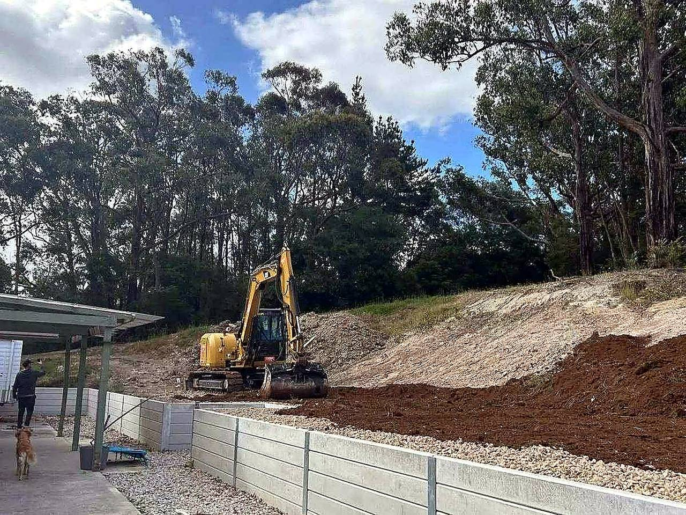

01
Council infrastructure works
Trunk drainage, road crossings, manhole installation and reinstatement to local authority specification.
SEQ — Civil & Drainage
Council infrastructure, property connections, subdivisional works, drainage & pipelaying, earthworks and retaining walls — built to spec, signed off, handed over.

From council trunk mains to lot connections — every run trenched, bedded, jointed, tested and backfilled to the standard.
01
Trunk drainage, road crossings, manhole installation and reinstatement to local authority specification.
02
Sewer and stormwater connections from the main to the boundary — laid to fall, tested, certified.
03
Full civil package for new estates — drainage, sewer, water, roadworks and as-constructed handover.
04
Precast RC, uPVC and HDPE — trenched, bedded, socketed, pressure tested and CCTV inspected.
05
Bulk and detailed excavation, cut to fill, site stripping, pad prep and compaction control.
06
Cantilever, gravity and reinforced soil walls — engineered, drained and certified.
Alignment pegged, levels confirmed, trench excavated to design line and grade with laser control.
Granular bedding placed and compacted; precast or uPVC segments lowered, socketed and aligned joint-by-joint.
Rubber-ring or solvent joints made; hydrostatic or air pressure test to AS/NZS 2566; CCTV inspection recorded.
Selected backfill placed in layers, compacted to spec; surface reinstated — pavement, turf or verge to council finish.
Every run is documented, tested and handed over with the paperwork the certifier and council expect.
Pipe installation, jointing and testing to the referenced Australian Standards for buried pipelines and plumbing.
Full pan-and-tilt inspection with footage and report — defect-free sign-off before backfill closes the trench.
Nuclear density or dynamic cone penetrometer records for every backfill layer — traceable to lot and chainage.
DWG/PDF as-cons, asset schedules, test reports and certification packaged for council and superintendent acceptance.
Tell us about the job — scope, location, timing — and we'll come back with a firm price. No obligation.